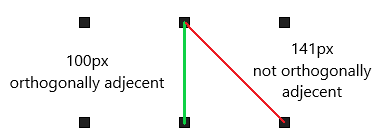
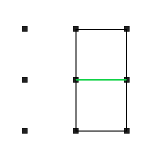
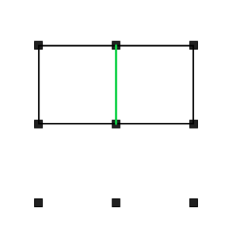

This is the game of Dots and Boxes. Two players take turns clicking and dragging to create lines between dots. The player that completes the last side of a box earns a point and an extra turn. When the grid is filled up, the player with the most boxes wins.
Note: This project uses my Polygon project for dot locations and collision detection. For more information, check out my Polygon project under the "Useful Tools" category.
This game is quite simple, but many cases need to be accounted for. For example, a line cannot be drawn on top of another line, after completing a box, that player takes another turn, or a box can only be counted towards one player. Given that such cases can be dealt with with a few if statements, there are still some major game mechanics that require some explanation. These mechanics include: lines can only be drawn between orthogonally adjacent dots, and when a new line completes a box, the box should be colored in.
Let's tackle the first mechanic: lines can only be drawn between orthogonally adjacent dots. To be orthogonally adjacent means to be directly above, below, to the right, or the left of something. In other words, two dots must be directly next to each other, excluding diagonally, for a line to be drawn between them. My first instinct when tackling this problem was to take an array of dots and use the dots' indices to determine whether or not two dots are orthogonally adjacent. However, we can cleverly use the physical distance between the dots to determine this. A dot has to be within a certain distance of another dot for them to be orthogonally adjacent.
The next mechanic to cover is how to detect when a newly created line completes a box. For this to be done, we need to keep a record of all lines previously created. A newly created line can only complete a box in two possible locations depending on whether the line is horizontal or vertical.
 To determine if a line is horizontal, we can check if the difference between the indicies of the connected dots is 1. Once we know if the line is horizontal or vertical, we can check the two possible box locations to see if all sides of the box are present. If so, we can color in that box and award a point to the player that created the last line.